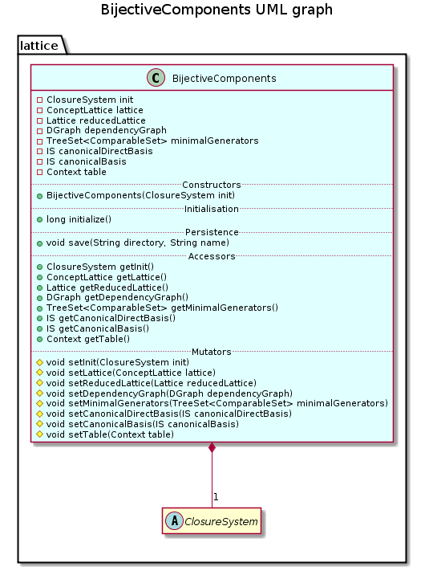

public class BijectiveComponents
extends java.lang.Object
This class generates bijective components issued from lattice theory for a specified closure system.
Bijective components are: closed set lattice or concept lattice, reduced lattice, reduced context, canonical direct basis, minimal generators and canonical basis, dependency graph.
A closure system is described by the abstract class ClosureSystem. In this package, a closure system can be instancied by an implicational system described by class ImplicationalSystem) or a context described by class Context).
This class provides a constructor, and only two methods: the method initialize() generates all the bijective components of the specified closure system; and the method save(java.lang.String, java.lang.String) saves theses components in files.
This class can be used as follows:
BijectiveComponents BC = new BijectiveComponents(initialClosureSystem);
BC.initialize();
BC.save(dirString,nameString);

comment the abstract class ClosureSystem
compute information at demand
| Constructor and Description |
|---|
BijectiveComponents(ClosureSystem init)
Constructs this component with the specified Closure System as initial closure system.
|
| Modifier and Type | Method and Description |
|---|---|
ImplicationalSystem |
getCanonicalBasis()
Returns the canonical basis of this component.
|
ImplicationalSystem |
getCanonicalDirectBasis()
Returns the canonical direct basis of this component.
|
DGraph |
getDependencyGraph()
Returns the dependency graph of this component.
|
ClosureSystem |
getInit()
Returns the Init of this component.
|
ConceptLattice |
getLattice()
Returns the lattice of this component.
|
java.util.TreeSet<ComparableSet> |
getMinimalGenerators()
Returns the minimal generators of this component.
|
Lattice |
getReducedLattice()
Returns the reduced lattice of this component.
|
Context |
getTable()
Returns the Table of this component.
|
long |
initialize()
Generates all the bijective components included in this component issued from the initial closure system
init. |
void |
save(java.lang.String directory,
java.lang.String name)
Saves all the bijective components included in this component in files saved in the specified directory.
|
protected void |
setCanonicalBasis(ImplicationalSystem canonicalBasis)
Set the canonical basis of this component.
|
protected void |
setCanonicalDirectBasis(ImplicationalSystem canonicalDirectBasis)
Set the canonical direct basis of this component.
|
protected void |
setDependencyGraph(DGraph dependencyGraph)
Set the dependency graph of this component.
|
protected void |
setInit(ClosureSystem init)
Set the Init of this component.
|
protected void |
setLattice(ConceptLattice lattice)
Set the lattice of this component.
|
protected void |
setMinimalGenerators(java.util.TreeSet<ComparableSet> minimalGenerators)
Set the minimal generators of this component.
|
protected void |
setReducedLattice(Lattice reducedLattice)
Set the reduced lattice of this component.
|
protected void |
setTable(Context table)
Set the Table of this component.
|
public BijectiveComponents(ClosureSystem init)
Constructs this component with the specified Closure System as initial closure system.
init - initial closure systempublic long initialize()
Generates all the bijective components included in this component issued from the initial closure system init.
The closed set lattice is generated when the closure system is an implicational system, and obtained by
this.init.closedSetLattice(true);
The concept lattice is generated when the closure system is a context, and obtained by by
this.init.conceptLattice(true);
The reduced lattice is obtained by
this.lattice.getIrreduciblesReduction();
The reduced table is obtained by
this.reducedLattice.getTable();
The dependency graph is obtained by
this.reducedLattice.getDependencyGraph();
Minimal generators are obtained by
this.reducedLattice.getMinimalGenerators();
The canonical direct basis is obtained by
this.reducedLattice.getCanonicalDirectBasis();
The canonical basis is obtained by
new ImplicationalSystem(this.canonicalDirectBasis).makeCanonicalBasis();
public void save(java.lang.String directory,
java.lang.String name)
Saves all the bijective components included in this component in files saved in the specified directory. A global description is saved in file name+"Readme.txt".
The specified name is used to defined a name for each file.
directory - location to save filename - name of the filespublic ClosureSystem getInit()
Returns the Init of this component.
protected void setInit(ClosureSystem init)
Set the Init of this component.
init - used to define field of this componentpublic ConceptLattice getLattice()
Returns the lattice of this component.
protected void setLattice(ConceptLattice lattice)
Set the lattice of this component.
lattice - used to define field of this componentpublic Lattice getReducedLattice()
Returns the reduced lattice of this component.
protected void setReducedLattice(Lattice reducedLattice)
Set the reduced lattice of this component.
reducedLattice - used to define field of this componentpublic DGraph getDependencyGraph()
Returns the dependency graph of this component.
protected void setDependencyGraph(DGraph dependencyGraph)
Set the dependency graph of this component.
dependencyGraph - used to define field of this componentpublic java.util.TreeSet<ComparableSet> getMinimalGenerators()
Returns the minimal generators of this component.
protected void setMinimalGenerators(java.util.TreeSet<ComparableSet> minimalGenerators)
Set the minimal generators of this component.
minimalGenerators - used to define field of this componentpublic ImplicationalSystem getCanonicalDirectBasis()
Returns the canonical direct basis of this component.
protected void setCanonicalDirectBasis(ImplicationalSystem canonicalDirectBasis)
Set the canonical direct basis of this component.
canonicalDirectBasis - used to define field of this componentpublic ImplicationalSystem getCanonicalBasis()
Returns the canonical basis of this component.
protected void setCanonicalBasis(ImplicationalSystem canonicalBasis)
Set the canonical basis of this component.
canonicalBasis - used to define field of this componentpublic Context getTable()
Returns the Table of this component.
protected void setTable(Context table)
Set the Table of this component.
table - used to define field of this component